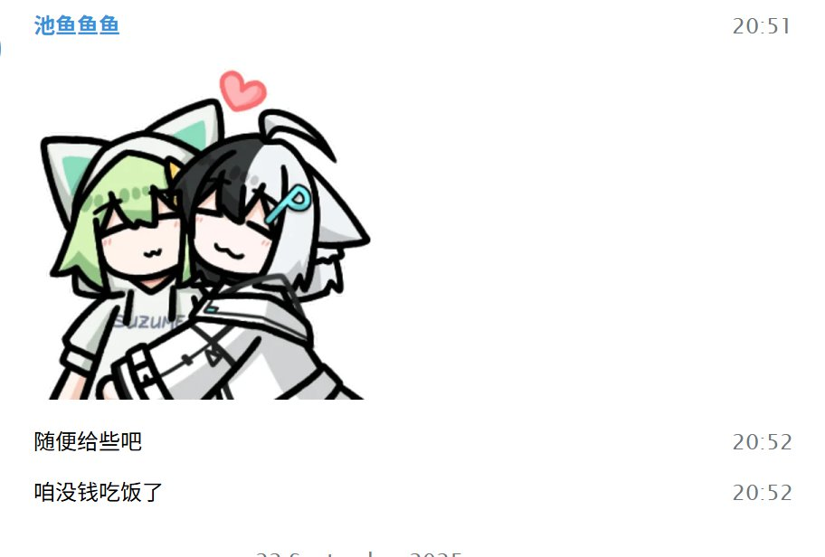
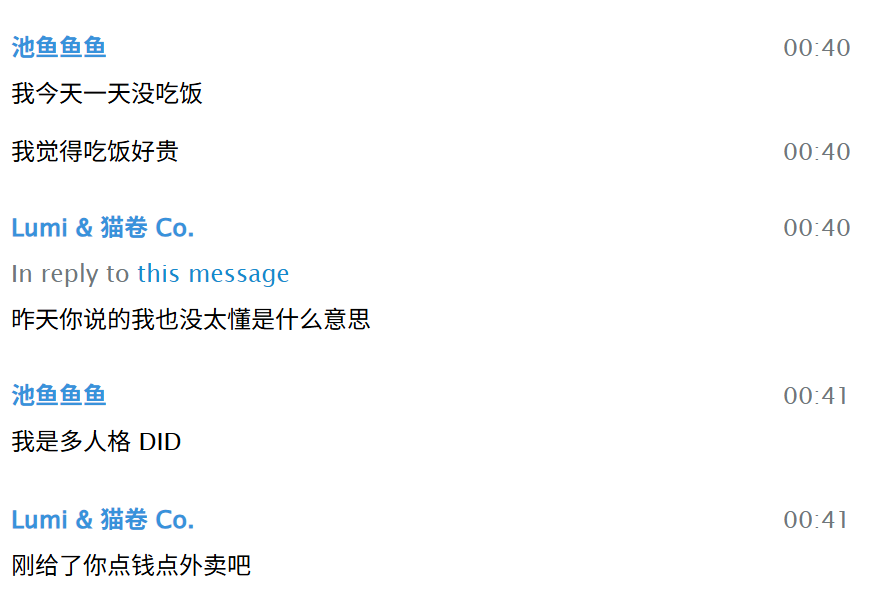
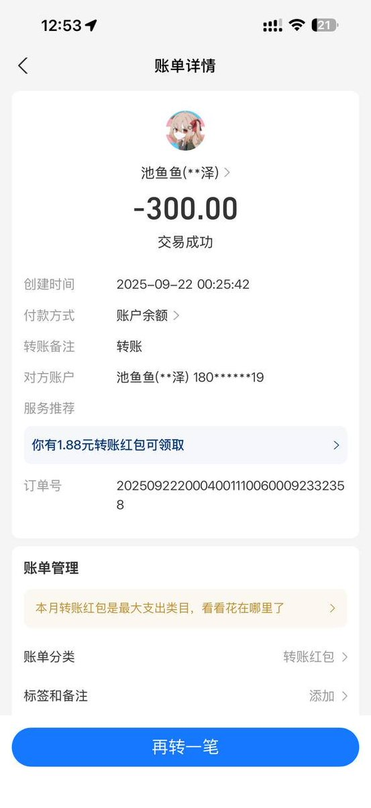

实际上只是我不卖惨你们不要以为我不惨，我基因遗传了一大堆精神病和易发慢性病/癌症，例如中国日本香港三个国家或地区都确诊过我的ASD，ADHD，抑郁症，焦虑症，精神分裂症，易性症，广泛性焦虑症，分离焦虑症，社交障碍，嗜睡症，睡眠节律障碍。
根据我的基因检测结果和家庭情况，我家的基因存在诸多问题，包括全部老人都因为癌症死掉（通常为肝癌），我的心肌梗死发病几率高于97%人群，多发性硬化则是95.4%，肺结核91%。
但我三年来从来没挂过收款码也没找人要过钱，很简单，我觉得我自己赚的钱可以养活自己，即使我已经被以上三个国家和地区事实认定为残疾人，但至少我眼睛嘴巴耳朵是好的。我以前收到过推友自发的捐助，所以我也做不出欺骗他人感情的事，我只会记住我曾获得的善意并将这善意传递下去。

根据我的基因检测结果和家庭情况，我家的基因存在诸多问题，包括全部老人都因为癌症死掉（通常为肝癌），我的心肌梗死发病几率高于97%人群，多发性硬化则是95.4%，肺结核91%。
但我三年来从来没挂过收款码也没找人要过钱，很简单，我觉得我自己赚的钱可以养活自己，即使我已经被以上三个国家和地区事实认定为残疾人，但至少我眼睛嘴巴耳朵是好的。我以前收到过推友自发的捐助，所以我也做不出欺骗他人感情的事，我只会记住我曾获得的善意并将这善意传递下去。



这里说一下池鱼的人设：她的人设是患有心脏病、家人不给治疗、不给钱吃饭、不让娱乐不让上学的深柜精神病小女孩。我当时并没有多想，然而现在想一个用的iPhone 17 Pro Max + https://t.co/xffY5cAIfE